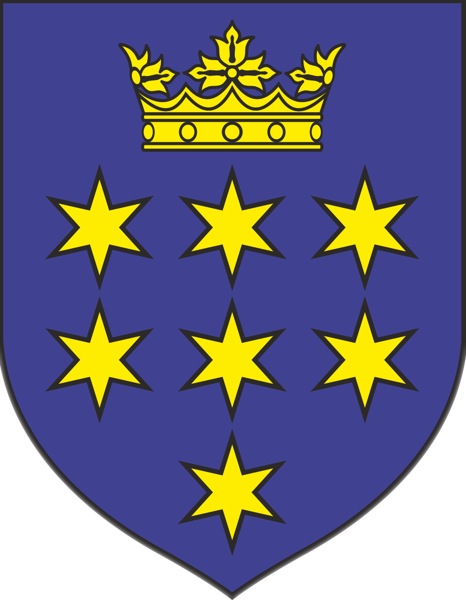
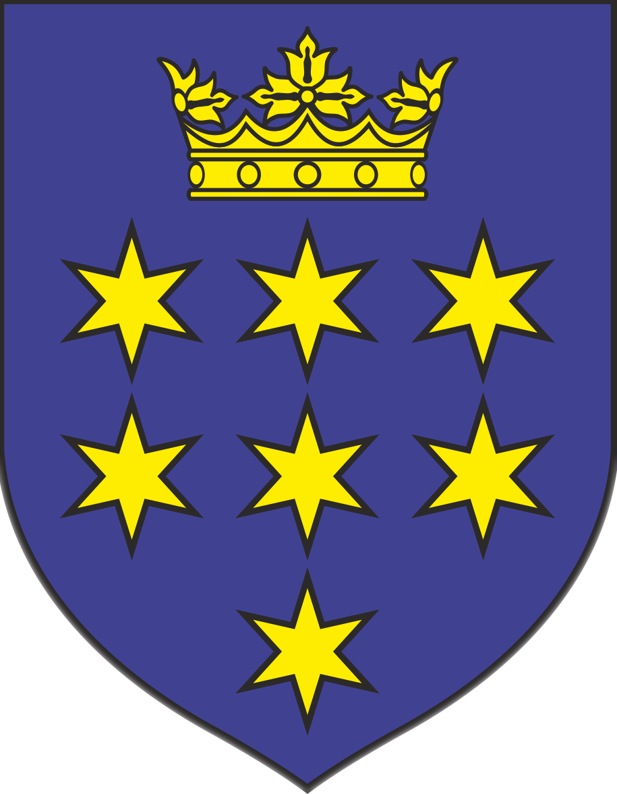

Predsjednik društva
Ivan Lekić
Voditeljica VA Lira
prof. Renata Grgić
Godina osnivanja
1971.
Broj aktivnih članova
20
Ivan Lekić
prof. Renata Grgić
1971.
20
Da bi očuvali tradiciju njegovanja kulturne baštine tamburaške glazbe, običaja, lijepe narodne nošnje, pjevanja i sviranja naših djedova i baka, 1971. godine rodila se ideja o osnivanju Društva. S ovom osnovnom zadaćom povezano je i nastojanje očuvanja nacionalne pripadnosti hrvatskome narodu i njegova jezika i kulture. Nije slučajno ideja pokrenuta u vrijeme buđenja i borbe protiv raznih oblika zatiranja svega što je hrvatsko. Podsjećam na povijesne okolnosti života pod austrougarskom vlašću, potom Kraljevinom Jugoslavijom, sna o nekakvom zajedničkom jeziku sviju naroda u toj Kraljevini (Slovenaca, Hrvata, Srba, Crnogoraca i drugih). Svjedoci smo i Novosadskog dogovora 60-ih godina 20.-og stoljeća o srpsko-hrvatskom i hrvatsko-srpskom jeziku koji je ostao “mrtav” jer se nitko nije pridržavao Dogovora. Hrvati su govorili hrvatskim, a Srbi srpskim jezikom.
Nastavili smo tako borbu naših iliraca, naših studenata, sudionika studentskog proljeća, sve do današnjih dana. Sve navedeno bila je vodilja i poticaj prvim pokretačima za osnivanje Društva, gospodinu Zvonimiru Šagovcu i Ivanu Lekiću . Na osnivačkoj Skupštini u studenome 1971. godine u Društvo se uključuju: Zvonko Dragić, Josip Turkalj, Nikola Rajšić i Antun Ivanetić te ih, uz Šagovca i Lekića, smatramo osnivačima Društva. Tamburaški sastav osnovan je iz redova starih svirača, a bilo ih je sveukupno osam: Zvonimir Šagovac, Ivan Lekić, Josip Turkalj, Josip Kotorac, Blaž Radošić, Antun Ivanetić, Nikola Rajšić i Zvonko Dragić.
2011. osvojena u Feričancima s ukupno 90 bodova. Prva i zasad jedina zlatna plaketa. Skladbe koje smo svirali: Staroselski splet, Stari glas, Breze sa Psunja.
Hrvatski sabor kulture dodijelo je KUD-u 2016. godine dijamantnu diplomu za 45 godina rada, promicanja i očuvanja kulturnog amaterizma Hrvatske
Priznanje Hrvatskog tamburaškog saveza i Festivala hrvatske umjetničke tamburaške glazbe, Osijek, za rad na njegovanju umjetničke tamburaške glazbe te za godina sudjelovanja na festivalima
2011. osvojena u Feričancima s ukupno 90 bodova. Svirali su blablablalbalba lba lalb i blablal.

SAD
Kanada
Venezuela
Njemačka
Švicarska
Norveška
Austrija
Makedonija
Danska
Italija
Grčka
BiH
3. listopada 2021. godine održan je 44. MFUTG u Domu Željezničar u Osijeku. Zbog pandemije je bio zatvoren za publiku te se održao isključivo u revijalnom dijelu. Svirali smo Staroselski splet, Kad lipe zamirišu te Želim biti Slavonijo s tobom.
Kako bi 50 godina prošlo bez barem jedne knjige od 250 stranica? U knjizi su opisani nastupi po godinama, događaji, zanimljivosti i crtice iz povijesti Društva. Vrijedi pročitati!


 

Ivan Lekić
Blaž Solić
Lovro Grgić
Martin Grgić
Petar Banjak
Viktoria Vuković
Bruno Šporčić
Mihaela Grgić
Mihaela Bićanić
Petra Pejaković
Sara Strinavić
Max Mital
Melani Matičević
Hrvoje Milak
Dominik Vlainić
Ivan Vlainić